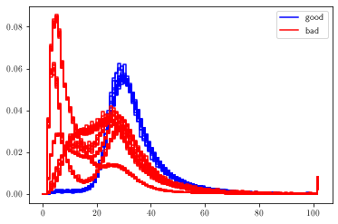
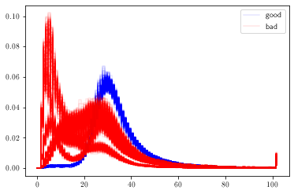
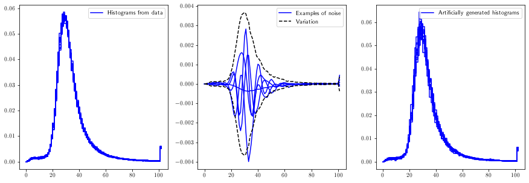
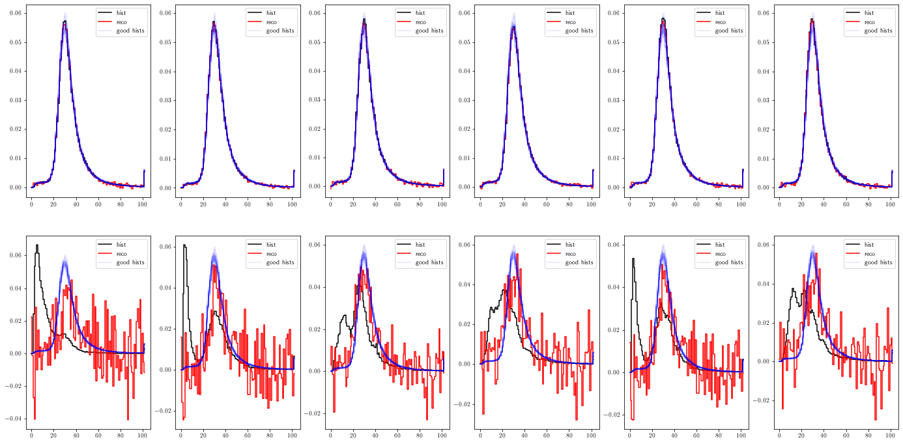
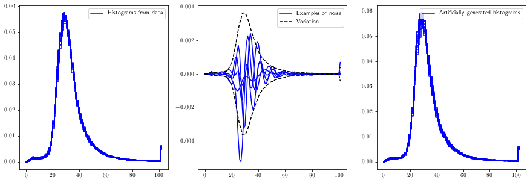
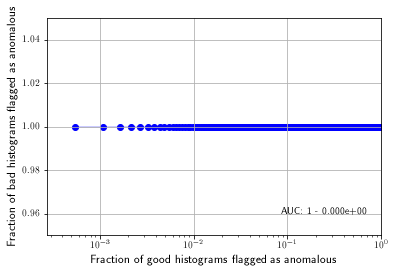
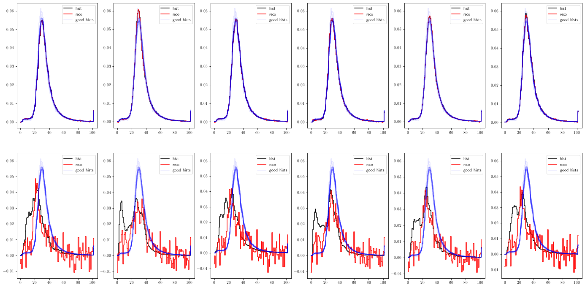
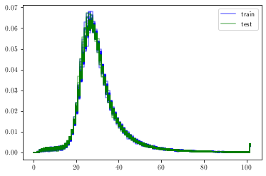
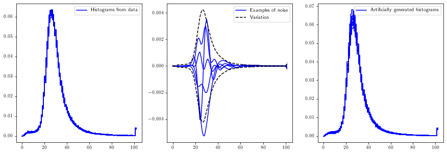
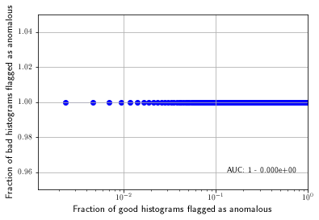

Train and test an autoencoder iteratively on local datasets
This notebook investigates the possibility to perform local autoencoder training, i.e. training on a small number of runs instead of training on a large dataset (e.g. a full year of data taking).
This notebook consists of three parts:
- Reading and preparing the data (common to part 2 and 3).
- Train an autoencoder on the first 5, 10, 15 etc. runs of 2017 data taking.
- Choose a random run to test on, use 5 previous runs for training. This is a first step naive attempt towards using dedicated reference runs for training.
Part 1: Reading and preparing the data
### imports
# external modules
import sys
import os
import numpy as np
import matplotlib.pyplot as plt
# local modules
sys.path.append('../utils')
import dataframe_utils as dfu
import hist_utils as hu
import plot_utils as pu
import autoencoder_utils as aeu
import generate_data_utils as gdu
sys.path.append('../src')
import DataLoader
2022-07-26 17:22:47.287801: W tensorflow/stream_executor/platform/default/dso_loader.cc:64] Could not load dynamic library 'libcudart.so.11.0'; dlerror: libcudart.so.11.0: cannot open shared object file: No such file or directory; LD_LIBRARY_PATH: /cvmfs/sft.cern.ch/lcg/releases/MCGenerators/thepeg/2.2.1-8d929/x86_64-centos7-gcc8-opt/lib/ThePEG:/cvmfs/sft.cern.ch/lcg/releases/MCGenerators/herwig++/7.2.1-f3599/x86_64-centos7-gcc8-opt/lib/Herwig:/cvmfs/sft.cern.ch/lcg/views/LCG_101swan/x86_64-centos7-gcc8-opt/lib/python3.9/site-packages/torch/lib:/cvmfs/sft.cern.ch/lcg/views/LCG_101swan/x86_64-centos7-gcc8-opt/lib/python3.9/site-packages/tensorflow:/cvmfs/sft.cern.ch/lcg/views/LCG_101swan/x86_64-centos7-gcc8-opt/lib/python3.9/site-packages/tensorflow/contrib/tensor_forest:/cvmfs/sft.cern.ch/lcg/views/LCG_101swan/x86_64-centos7-gcc8-opt/lib/python3.9/site-packages/tensorflow/python/framework:/cvmfs/sft.cern.ch/lcg/releases/java/8u222-884d8/x86_64-centos7-gcc8-opt/jre/lib/amd64:/cvmfs/sft.cern.ch/lcg/views/LCG_101swan/x86_64-centos7-gcc8-opt/lib64:/cvmfs/sft.cern.ch/lcg/views/LCG_101swan/x86_64-centos7-gcc8-opt/lib:/cvmfs/sft.cern.ch/lcg/releases/gcc/8.3.0-cebb0/x86_64-centos7/lib:/cvmfs/sft.cern.ch/lcg/releases/gcc/8.3.0-cebb0/x86_64-centos7/lib64:/cvmfs/sft.cern.ch/lcg/releases/binutils/2.30-e5b21/x86_64-centos7/lib:/usr/local/lib/:/cvmfs/sft.cern.ch/lcg/releases/R/3.6.3-dfb24/x86_64-centos7-gcc8-opt/lib64/R/library/readr/rcon
2022-07-26 17:22:47.287868: I tensorflow/stream_executor/cuda/cudart_stub.cc:29] Ignore above cudart dlerror if you do not have a GPU set up on your machine.
### read the data and perform some selections
# note: this cell assumes you have a csv file stored at the specified location,
# containing only histograms of the specified type;
# see the tutorial read_and_write_data for examples on how to create such files!
histname = 'chargeInner_PXLayer_2'
filename = 'DF2017_'+histname+'.csv'
datadir = '../data'
dloader = DataLoader.DataLoader()
df = dloader.get_dataframe_from_file( os.path.join(datadir, filename) )
print('raw input data shape: {}'.format( dfu.get_hist_values(df)[0].shape ))
df = dfu.select_dcson(df)
df = dfu.select_highstat(df)
print('number of passing lumisections after selection: {}'.format( len(df) ))
runs_all = dfu.get_runs(df)
(hists_all,runnbs_all,lsnbs_all) = hu.preparedatafromdf(df,returnrunls=True,rebinningfactor=1,donormalize=True)
print('shape of histogram array: {}'.format(hists_all.shape))
INFO in DataLoader.get_dataframe_from_file: loading dataframe from file ../data/DF2017_chargeInner_PXLayer_2.csv...
INFO in DataLoader.get_dataframe_from_file: sorting the dataframe...
INFO in DataLoader.get_dataframe_from_file: loaded a dataframe with 225954 rows and 16 columns.
raw input data shape: (225954, 102)
number of passing lumisections after selection: 211371
shape of histogram array: (211371, 102)
Part 2: Updating the training set
### get a test set
goodrunsls = {'2017':
{
"297056":[[-1]],
}}
badrunsls = {'2017':
{
"297287":[[-1]],
"297288":[[-1]],
"297289":[[-1]],
"299316":[[-1]],
"299324":[[-1]],
}}
# select the correct data-taking year relevant for the file chosen above
year = '2017'
# load good and bad sets from df
(hists_good,runnbs_good,lsnbs_good) = hu.preparedatafromdf(
dfu.select_runsls(df,goodrunsls[year]),
returnrunls=True, donormalize=True)
(hists_bad,runnbs_bad,lsnbs_bad) = hu.preparedatafromdf(
dfu.select_runsls(df,badrunsls[year]),
returnrunls=True, donormalize=True)
print('shape of good test set '+str(hists_good.shape))
print('shape of bad test set '+str(hists_bad.shape))
# make plot
pu.plot_sets([hists_good,hists_bad],
colorlist=['b','r'],
labellist=['good','bad'],
transparencylist=[],
xlims=(0,-1))
# use resampling tool to upsample and add more variation
(hists_good,_,_) = gdu.upsample_hist_set(hists_good,ntarget=2e3,fourierstdfactor=15., doplot=False)
(hists_bad,_,_) = gdu.upsample_hist_set(hists_bad,ntarget=2e3,fourierstdfactor=5., doplot=False)
print('shape of good test set '+str(hists_good.shape))
print('shape of bad test set '+str(hists_bad.shape))
# make plot
pu.plot_sets([hists_good,hists_bad],
colorlist=['b','r'],
labellist=['good','bad'],
transparencylist=[0.1,0.1],
xlims=(0,-1))
shape of good test set (184, 102)
shape of bad test set (97, 102)
shape of good test set (1840, 102)
shape of bad test set (1940, 102)
(<Figure size 432x288 with 1 Axes>, <AxesSubplot:>)


### function to purify training set by removing a given fraction of high mse histograms
def purify_training_set(hists,model,rmfraction):
mse = aeu.mseTop10Raw(hists,model.predict(hists))
threshold = np.quantile(mse,1-rmfraction)
keepindices = np.where(mse<threshold)
return hists[keepindices]
### functions to test performance on test set
def test_autoencoder(hists_good,hists_bad,model):
mse_good = aeu.mseTop10Raw(hists_good,model.predict(hists_good))
mse_bad = aeu.mseTop10Raw(hists_bad,model.predict(hists_bad))
labels_good = np.zeros(len(mse_good))
labels_bad = np.ones(len(mse_bad))
labels = np.concatenate(tuple([labels_good,labels_bad]))
scores = np.concatenate(tuple([mse_good,mse_bad]))
maxnoninf = np.max(np.where(scores==np.inf,np.min(scores),scores))
scores = np.where(scores==np.inf,maxnoninf,scores)
auc = aeu.get_roc(scores, labels, mode='full', bootstrap_samples=100)
plt.show()
def plot_examples(hists_good,hists_bad,model):
# set parameters
nexamples = 6
fig,axs = plt.subplots(2,nexamples,figsize=(24,12))
inds_good = np.random.choice(range(len(hists_good)),nexamples)
inds_bad = np.random.choice(range(len(hists_bad)),nexamples)
inds_ref = np.random.choice(range(len(hists_good)),20)
# determine whether to show run/lumi number in label (not possible when using resampled sets)
truelabel = True
if( len(hists_good)!=len(runnbs_good) or len(hists_bad)!=len(runnbs_good) ): truelabel = False
# plot examples
for i in range(nexamples):
hist_good = hists_good[inds_good[i]:inds_good[i]+1]
reco_good = model.predict(hist_good)
hist_bad = hists_bad[inds_bad[i]:inds_bad[i]+1]
reco_bad = model.predict(hist_bad)
hist_good_label = hist_bad_label = 'hist'
if truelabel:
hist_good_label += ' (run: '+str(int(runnbs_good[inds_good[i]]))+', ls: '+str(int(lsnbs_good[inds_good[i]]))+')'
hist_bad_label += ' (run: '+str(int(runnbs_bad[inds_bad[i]]))+', ls: '+str(int(lsnbs_bad[inds_bad[i]]))+')'
pu.plot_sets([hist_good,reco_good,hists_good[inds_ref]],
fig=fig,ax=axs[0,i],
title='',
colorlist=['black','red','blue'],
labellist=[hist_good_label,'reco','good hists'],
transparencylist=[1.,1.,0.1])
pu.plot_sets([hist_bad,reco_bad,hists_good[inds_ref]],
fig=fig,ax=axs[1,i],
title='',
colorlist=['black','red','blue'],
labellist=[hist_bad_label,'reco','good hists'],
transparencylist=[1.,1.,0.1])
plt.show()
### iterate over growing amount of data
nruns = [5,10]
# first iteration manually
X_train = hists_all[np.where(runnbs_all<runs_all[nruns[0]])]
print('size of training set (intial): '+str(len(X_train)))
(X_train_ext,_,_) = gdu.upsample_hist_set(X_train, 1e5)
#X_train_ext = X_train
model = aeu.train_simple_autoencoder(X_train_ext,nepochs=10)
print('evaluating model on test set')
test_autoencoder(hists_good,hists_bad,model)
plot_examples(hists_good,hists_bad,model)
# next iterations in a loop
for i in range(1,len(nruns)):
this_upperbound = runs_all[nruns[i]]
this_lowerbound = runs_all[nruns[i-1]]
print('adding runs {} to {}'.format(this_lowerbound,this_upperbound))
print('(training on {} runs in total)'.format(nruns[i]))
newhists = hists_all[np.where( (runnbs_all<this_upperbound) & (runnbs_all>=this_lowerbound) )]
print('number of new histograms added to training set: '+str(len(newhists)))
X_train = np.concatenate( (X_train,newhists), axis=0 )
X_train = purify_training_set(X_train,model,0.1)
print('size of training set (intial): '+str(len(X_train)))
(X_train_ext,_,_) = gdu.upsample_hist_set(X_train, 1e5)
#X_train_ext = X_train
model = aeu.train_simple_autoencoder(X_train_ext)
print('size of training set (after training and purifying): '+str(len(X_train)))
print('evaluating model on test set')
test_autoencoder(hists_good,hists_bad,model)
plot_examples(hists_good,hists_bad,model)
size of training set (intial): 1017
2022-07-26 17:29:35.167654: W tensorflow/stream_executor/platform/default/dso_loader.cc:64] Could not load dynamic library 'libcuda.so.1'; dlerror: libcuda.so.1: cannot open shared object file: No such file or directory; LD_LIBRARY_PATH: /cvmfs/sft.cern.ch/lcg/releases/MCGenerators/thepeg/2.2.1-8d929/x86_64-centos7-gcc8-opt/lib/ThePEG:/cvmfs/sft.cern.ch/lcg/releases/MCGenerators/herwig++/7.2.1-f3599/x86_64-centos7-gcc8-opt/lib/Herwig:/cvmfs/sft.cern.ch/lcg/views/LCG_101swan/x86_64-centos7-gcc8-opt/lib/python3.9/site-packages/torch/lib:/cvmfs/sft.cern.ch/lcg/views/LCG_101swan/x86_64-centos7-gcc8-opt/lib/python3.9/site-packages/tensorflow:/cvmfs/sft.cern.ch/lcg/views/LCG_101swan/x86_64-centos7-gcc8-opt/lib/python3.9/site-packages/tensorflow/contrib/tensor_forest:/cvmfs/sft.cern.ch/lcg/views/LCG_101swan/x86_64-centos7-gcc8-opt/lib/python3.9/site-packages/tensorflow/python/framework:/cvmfs/sft.cern.ch/lcg/releases/java/8u222-884d8/x86_64-centos7-gcc8-opt/jre/lib/amd64:/cvmfs/sft.cern.ch/lcg/views/LCG_101swan/x86_64-centos7-gcc8-opt/lib64:/cvmfs/sft.cern.ch/lcg/views/LCG_101swan/x86_64-centos7-gcc8-opt/lib:/cvmfs/sft.cern.ch/lcg/releases/gcc/8.3.0-cebb0/x86_64-centos7/lib:/cvmfs/sft.cern.ch/lcg/releases/gcc/8.3.0-cebb0/x86_64-centos7/lib64:/cvmfs/sft.cern.ch/lcg/releases/binutils/2.30-e5b21/x86_64-centos7/lib:/usr/local/lib/:/cvmfs/sft.cern.ch/lcg/releases/R/3.6.3-dfb24/x86_64-centos7-gcc8-opt/lib64/R/library/readr/rcon
2022-07-26 17:29:35.167722: W tensorflow/stream_executor/cuda/cuda_driver.cc:326] failed call to cuInit: UNKNOWN ERROR (303)
2022-07-26 17:29:35.167818: I tensorflow/stream_executor/cuda/cuda_diagnostics.cc:156] kernel driver does not appear to be running on this host (59ec73fb7463): /proc/driver/nvidia/version does not exist
2022-07-26 17:29:35.169168: I tensorflow/core/platform/cpu_feature_guard.cc:142] This TensorFlow binary is optimized with oneAPI Deep Neural Network Library (oneDNN) to use the following CPU instructions in performance-critical operations: AVX2 FMA
To enable them in other operations, rebuild TensorFlow with the appropriate compiler flags.
Model: "sequential"
_________________________________________________________________
Layer (type) Output Shape Param #
=================================================================
dense (Dense) (None, 51) 5253
_________________________________________________________________
dense_1 (Dense) (None, 102) 5304
=================================================================
Total params: 10,557
Trainable params: 10,557
Non-trainable params: 0
_________________________________________________________________
2022-07-26 17:29:37.178509: I tensorflow/compiler/mlir/mlir_graph_optimization_pass.cc:176] None of the MLIR Optimization Passes are enabled (registered 2)
2022-07-26 17:29:37.180016: I tensorflow/core/platform/profile_utils/cpu_utils.cc:114] CPU Frequency: 2399845000 Hz
Epoch 1/10
180/180 [==============================] - 10s 31ms/step - loss: 1.5311e-04 - val_loss: 4.9320e-06
Epoch 2/10
180/180 [==============================] - 5s 27ms/step - loss: 4.5635e-06 - val_loss: 4.2272e-06
Epoch 3/10
180/180 [==============================] - 5s 26ms/step - loss: 3.9521e-06 - val_loss: 3.6740e-06
Epoch 4/10
180/180 [==============================] - 6s 32ms/step - loss: 3.4399e-06 - val_loss: 3.2126e-06
Epoch 5/10
180/180 [==============================] - 8s 42ms/step - loss: 3.0351e-06 - val_loss: 2.8201e-06
Epoch 6/10
180/180 [==============================] - 6s 32ms/step - loss: 2.6835e-06 - val_loss: 2.4938e-06s - loss: 2.6835e-0
Epoch 7/10
180/180 [==============================] - 5s 30ms/step - loss: 2.3665e-06 - val_loss: 2.2352e-06
Epoch 8/10
180/180 [==============================] - 5s 30ms/step - loss: 2.1452e-06 - val_loss: 2.0101e-06
Epoch 9/10
180/180 [==============================] - 6s 36ms/step - loss: 1.9231e-06 - val_loss: 1.8349e-06
Epoch 10/10
180/180 [==============================] - 9s 52ms/step - loss: 1.8513e-06 - val_loss: 1.8462e-06
evaluating model on test set
calculating ROC curve on 100 bootstrap samples of size 3780



adding runs 297057 to 297114
(training on 10 runs in total)
number of new histograms added to training set: 2657
size of training set (intial): 3306
Model: "sequential_1"
_________________________________________________________________
Layer (type) Output Shape Param #
=================================================================
dense_2 (Dense) (None, 51) 5253
_________________________________________________________________
dense_3 (Dense) (None, 102) 5304
=================================================================
Total params: 10,557
Trainable params: 10,557
Non-trainable params: 0
_________________________________________________________________
Epoch 1/40
179/179 [==============================] - 7s 25ms/step - loss: 1.1214e-04 - val_loss: 5.1926e-06
Epoch 2/40
179/179 [==============================] - 4s 21ms/step - loss: 4.9028e-06 - val_loss: 4.6196e-06
Epoch 3/40
179/179 [==============================] - 3s 18ms/step - loss: 4.3412e-06 - val_loss: 4.0848e-06
Epoch 4/40
179/179 [==============================] - 3s 17ms/step - loss: 3.8516e-06 - val_loss: 3.6149e-06
Epoch 5/40
179/179 [==============================] - 3s 18ms/step - loss: 3.3940e-06 - val_loss: 3.1668e-06
Epoch 6/40
179/179 [==============================] - 3s 19ms/step - loss: 2.9781e-06 - val_loss: 2.7924e-06
Epoch 7/40
179/179 [==============================] - 3s 19ms/step - loss: 2.6401e-06 - val_loss: 2.4741e-06
Epoch 8/40
179/179 [==============================] - 3s 18ms/step - loss: 2.4025e-06 - val_loss: 2.2292e-06
Epoch 9/40
179/179 [==============================] - 3s 18ms/step - loss: 2.0766e-06 - val_loss: 1.9773e-06
Epoch 10/40
179/179 [==============================] - 3s 17ms/step - loss: 1.8608e-06 - val_loss: 1.7755e-06
Epoch 11/40
179/179 [==============================] - 3s 18ms/step - loss: 1.8868e-06 - val_loss: 1.8752e-06
Epoch 12/40
179/179 [==============================] - 3s 19ms/step - loss: 1.5737e-06 - val_loss: 1.4608e-06
Epoch 13/40
179/179 [==============================] - 3s 18ms/step - loss: 1.3841e-06 - val_loss: 1.3289e-06
Epoch 14/40
179/179 [==============================] - 3s 20ms/step - loss: 1.2598e-06 - val_loss: 1.2143e-06
Epoch 15/40
179/179 [==============================] - 3s 18ms/step - loss: 1.1874e-06 - val_loss: 1.7827e-06
Epoch 16/40
179/179 [==============================] - 3s 15ms/step - loss: 1.4452e-06 - val_loss: 1.0406e-06
Epoch 17/40
179/179 [==============================] - 3s 19ms/step - loss: 9.9276e-07 - val_loss: 9.7675e-07
Epoch 18/40
179/179 [==============================] - 3s 17ms/step - loss: 9.2855e-07 - val_loss: 9.1790e-07
Epoch 19/40
179/179 [==============================] - 3s 18ms/step - loss: 8.7365e-07 - val_loss: 8.6198e-07
Epoch 20/40
179/179 [==============================] - 3s 18ms/step - loss: 8.2775e-07 - val_loss: 8.1381e-07
Epoch 21/40
179/179 [==============================] - 3s 18ms/step - loss: 7.8679e-07 - val_loss: 7.8189e-07
Epoch 22/40
179/179 [==============================] - 4s 20ms/step - loss: 7.5235e-07 - val_loss: 7.4516e-07
Epoch 23/40
179/179 [==============================] - 3s 15ms/step - loss: 7.2027e-07 - val_loss: 7.0982e-07
Epoch 24/40
179/179 [==============================] - 3s 18ms/step - loss: 6.9286e-07 - val_loss: 6.8907e-07
Epoch 25/40
179/179 [==============================] - 3s 16ms/step - loss: 2.5623e-06 - val_loss: 5.6969e-06
Epoch 26/40
179/179 [==============================] - 3s 18ms/step - loss: 1.2265e-06 - val_loss: 6.3184e-07
Epoch 27/40
179/179 [==============================] - 3s 19ms/step - loss: 6.1497e-07 - val_loss: 6.1188e-07
Epoch 28/40
179/179 [==============================] - 3s 19ms/step - loss: 5.9777e-07 - val_loss: 5.9449e-07
Epoch 29/40
179/179 [==============================] - 4s 20ms/step - loss: 5.8060e-07 - val_loss: 5.7774e-07
Epoch 30/40
179/179 [==============================] - 3s 19ms/step - loss: 5.6749e-07 - val_loss: 5.6069e-07
Epoch 31/40
179/179 [==============================] - 3s 18ms/step - loss: 5.4924e-07 - val_loss: 5.4804e-07
Epoch 32/40
179/179 [==============================] - 3s 19ms/step - loss: 5.3318e-07 - val_loss: 5.2841e-07
Epoch 33/40
179/179 [==============================] - 3s 19ms/step - loss: 5.1866e-07 - val_loss: 5.1238e-07
Epoch 34/40
179/179 [==============================] - 3s 16ms/step - loss: 5.1258e-07 - val_loss: 4.9960e-07
Epoch 35/40
179/179 [==============================] - 3s 19ms/step - loss: 4.9696e-07 - val_loss: 4.8245e-07
Epoch 36/40
179/179 [==============================] - 3s 19ms/step - loss: 4.7906e-07 - val_loss: 4.6904e-07
Epoch 37/40
179/179 [==============================] - 3s 19ms/step - loss: 4.7037e-07 - val_loss: 4.5758e-07
Epoch 38/40
179/179 [==============================] - 3s 18ms/step - loss: 4.7814e-07 - val_loss: 4.5095e-07
Epoch 39/40
179/179 [==============================] - 3s 17ms/step - loss: 4.1904e-06 - val_loss: 1.0307e-06
Epoch 40/40
179/179 [==============================] - 3s 17ms/step - loss: 4.8127e-07 - val_loss: 4.1665e-07
size of training set (after training and purifying): 3306
evaluating model on test set
calculating ROC curve on 100 bootstrap samples of size 3780



Part 3: Local training on nearby runs
### choose random run for testing, train on previous runs
# (testing: see next cell)
# choose runs
print('number of available runs: '+str(len(runs_all)))
runindex = np.random.choice(range(5,len(runs_all)))
#runindex = runs_all.index(305364)
test_run = runs_all[runindex]
print('chosen run index: '+str(runindex)+', corresponding to run: '+str(test_run))
training_runs = runs_all[runindex-5:runindex]
print('runs used for training: '+str(training_runs))
# get the data
df = dfu.select_dcson(df)
(hists_train,runnbs_train,lsnbs_train) = hu.preparedatafromdf( dfu.select_runs(df,training_runs),returnrunls=True,donormalize=True)
(hists_test,runnbs_test,lsnbs_test) = hu.preparedatafromdf( dfu.select_runs(df,[test_run]),returnrunls=True,donormalize=True)
print('shape of training set '+str(hists_train.shape))
print('shape of test set '+str(hists_test.shape))
# make plot
pu.plot_sets([hists_train,hists_test],ax=None,title='',colorlist=['b','g'],labellist=['train','test'],transparencylist=[0.5,0.5],xlims=(0,-1))
plt.show()
# train the autoencoder
(X_train,_,_) = gdu.upsample_hist_set(hists_train, 1e5)
#X_train = hists_train
model = aeu.train_simple_autoencoder(X_train)
number of available runs: 564
chosen run index: 412, corresponding to run: 304209
runs used for training: [304197, 304198, 304199, 304200, 304204]
shape of training set (909, 102)
shape of test set (425, 102)

Model: "sequential_2"
_________________________________________________________________
Layer (type) Output Shape Param #
=================================================================
dense_4 (Dense) (None, 51) 5253
_________________________________________________________________
dense_5 (Dense) (None, 102) 5304
=================================================================
Total params: 10,557
Trainable params: 10,557
Non-trainable params: 0
_________________________________________________________________
Epoch 1/40
180/180 [==============================] - 2s 7ms/step - loss: 1.6187e-04 - val_loss: 5.1549e-06
Epoch 2/40
180/180 [==============================] - 1s 6ms/step - loss: 4.8933e-06 - val_loss: 4.6664e-06
Epoch 3/40
180/180 [==============================] - 1s 6ms/step - loss: 4.4298e-06 - val_loss: 4.2151e-06
Epoch 4/40
180/180 [==============================] - 1s 6ms/step - loss: 3.9914e-06 - val_loss: 3.7808e-06
Epoch 5/40
180/180 [==============================] - 1s 6ms/step - loss: 3.5813e-06 - val_loss: 3.3762e-06
Epoch 6/40
180/180 [==============================] - 1s 6ms/step - loss: 3.2062e-06 - val_loss: 3.0032e-06
Epoch 7/40
180/180 [==============================] - 1s 6ms/step - loss: 2.8450e-06 - val_loss: 2.6555e-06
Epoch 8/40
180/180 [==============================] - 1s 7ms/step - loss: 2.5000e-06 - val_loss: 2.3279e-06
Epoch 9/40
180/180 [==============================] - 1s 7ms/step - loss: 2.1955e-06 - val_loss: 2.0381e-06
Epoch 10/40
180/180 [==============================] - 1s 7ms/step - loss: 1.9759e-06 - val_loss: 1.8084e-06
Epoch 11/40
180/180 [==============================] - 1s 6ms/step - loss: 1.7138e-06 - val_loss: 1.5692e-06
Epoch 12/40
180/180 [==============================] - 1s 6ms/step - loss: 1.6443e-06 - val_loss: 1.3883e-06
Epoch 13/40
180/180 [==============================] - 1s 7ms/step - loss: 1.3263e-06 - val_loss: 1.2380e-06
Epoch 14/40
180/180 [==============================] - 1s 6ms/step - loss: 1.1858e-06 - val_loss: 1.1198e-06
Epoch 15/40
180/180 [==============================] - 1s 7ms/step - loss: 1.0711e-06 - val_loss: 1.0200e-06
Epoch 16/40
180/180 [==============================] - 1s 6ms/step - loss: 1.2255e-06 - val_loss: 9.8934e-07
Epoch 17/40
180/180 [==============================] - 1s 5ms/step - loss: 9.1090e-07 - val_loss: 8.4949e-07
Epoch 18/40
180/180 [==============================] - 1s 7ms/step - loss: 8.5840e-07 - val_loss: 9.2149e-07
Epoch 19/40
180/180 [==============================] - 1s 6ms/step - loss: 1.1008e-06 - val_loss: 7.3578e-07
Epoch 20/40
180/180 [==============================] - 1s 7ms/step - loss: 7.1226e-07 - val_loss: 6.9035e-07
Epoch 21/40
180/180 [==============================] - 1s 6ms/step - loss: 6.6963e-07 - val_loss: 6.5100e-07
Epoch 22/40
180/180 [==============================] - 1s 7ms/step - loss: 6.3295e-07 - val_loss: 6.1755e-07
Epoch 23/40
180/180 [==============================] - 1s 7ms/step - loss: 6.0135e-07 - val_loss: 5.9092e-07
Epoch 24/40
180/180 [==============================] - 1s 6ms/step - loss: 5.7492e-07 - val_loss: 5.6528e-07
Epoch 25/40
180/180 [==============================] - 1s 6ms/step - loss: 5.5186e-07 - val_loss: 5.4899e-07
Epoch 26/40
180/180 [==============================] - 1s 6ms/step - loss: 5.3143e-07 - val_loss: 5.1981e-07
Epoch 27/40
180/180 [==============================] - 1s 6ms/step - loss: 5.1755e-07 - val_loss: 5.0836e-07
Epoch 28/40
180/180 [==============================] - 1s 6ms/step - loss: 1.2912e-06 - val_loss: 1.8068e-05
Epoch 29/40
180/180 [==============================] - 1s 6ms/step - loss: 4.3261e-06 - val_loss: 4.7346e-07
Epoch 30/40
180/180 [==============================] - 1s 6ms/step - loss: 4.6356e-07 - val_loss: 4.5966e-07
Epoch 31/40
180/180 [==============================] - 1s 6ms/step - loss: 4.5268e-07 - val_loss: 4.4805e-07
Epoch 32/40
180/180 [==============================] - 1s 6ms/step - loss: 4.4301e-07 - val_loss: 4.4015e-07
Epoch 33/40
180/180 [==============================] - 1s 6ms/step - loss: 4.3409e-07 - val_loss: 4.3113e-07
Epoch 34/40
180/180 [==============================] - 1s 7ms/step - loss: 5.3247e-07 - val_loss: 6.7669e-07
Epoch 35/40
180/180 [==============================] - 1s 6ms/step - loss: 5.2115e-07 - val_loss: 4.1663e-07
Epoch 36/40
180/180 [==============================] - 1s 6ms/step - loss: 4.0731e-07 - val_loss: 4.0308e-07
Epoch 37/40
180/180 [==============================] - 1s 6ms/step - loss: 3.9863e-07 - val_loss: 3.9545e-07
Epoch 38/40
180/180 [==============================] - 1s 7ms/step - loss: 3.9706e-07 - val_loss: 3.9387e-07
Epoch 39/40
180/180 [==============================] - 1s 6ms/step - loss: 3.8418e-07 - val_loss: 3.9225e-07
Epoch 40/40
180/180 [==============================] - 1s 6ms/step - loss: 3.7796e-07 - val_loss: 3.7572e-07

### test the autoencoder trained in the previous cell
# note: do not simply use hists_good for a good test set,
# as the model might not be trained on all shape variations that are supposed to be 'good',
# resulting in artificially bad performance.
# we can use hists_test instead, but it is not at all guaranteed that all of them are good.
# hence the label 'good hists' in the plot below is not necessarily correct.
test_autoencoder(hists_test,hists_bad,model)
plot_examples(hists_test,hists_bad,model)
calculating ROC curve on 100 bootstrap samples of size 2365
